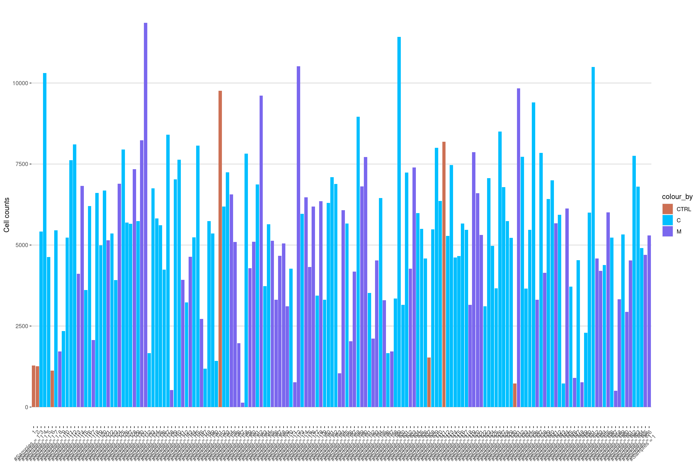
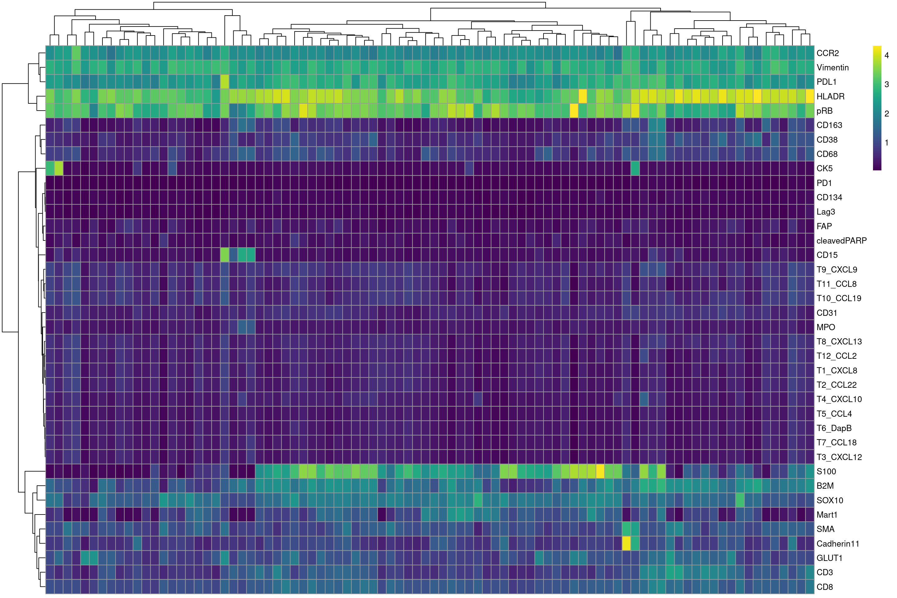
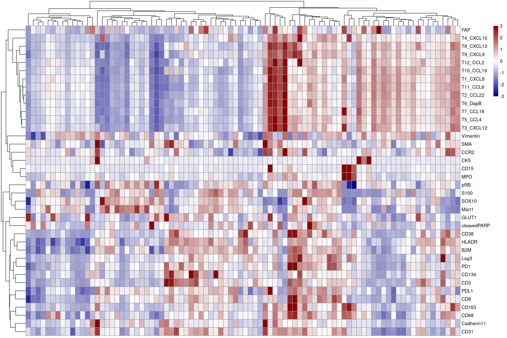
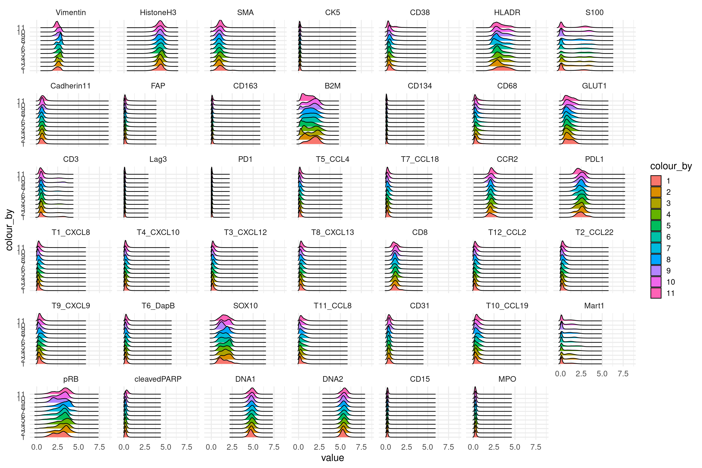
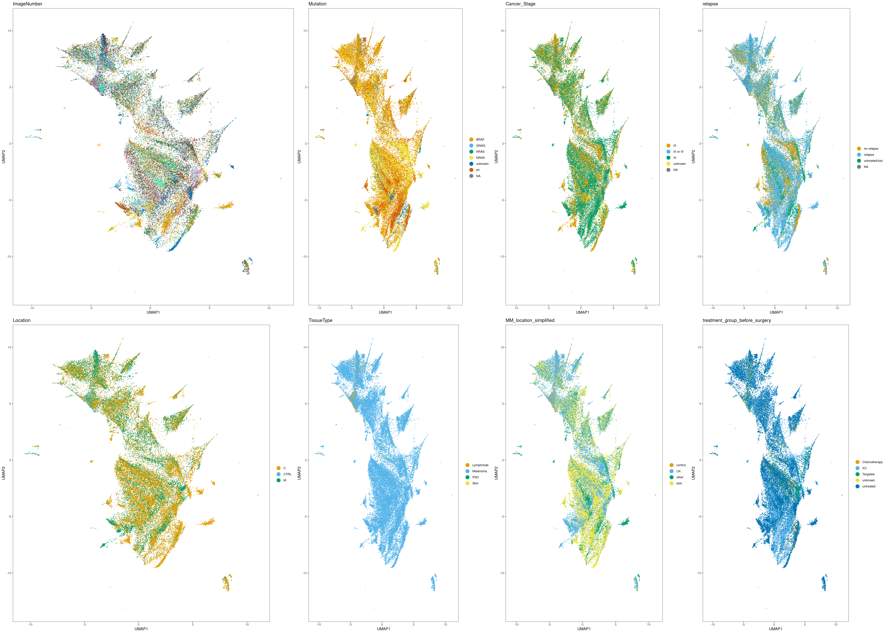

03_RNA_quality_control
Nils Eling/Daniel Schulz/Tobias Hoch
2020-07-28
Last updated: 2021-02-18
Checks: 7 0
Knit directory: melanoma_publication_old_data/
This reproducible R Markdown analysis was created with workflowr (version 1.6.2). The Checks tab describes the reproducibility checks that were applied when the results were created. The Past versions tab lists the development history.
Great! Since the R Markdown file has been committed to the Git repository, you know the exact version of the code that produced these results.
Great job! The global environment was empty. Objects defined in the global environment can affect the analysis in your R Markdown file in unknown ways. For reproduciblity it’s best to always run the code in an empty environment.
The command set.seed(20200728) was run prior to running the code in the R Markdown file. Setting a seed ensures that any results that rely on randomness, e.g. subsampling or permutations, are reproducible.
Great job! Recording the operating system, R version, and package versions is critical for reproducibility.
Nice! There were no cached chunks for this analysis, so you can be confident that you successfully produced the results during this run.
Great job! Using relative paths to the files within your workflowr project makes it easier to run your code on other machines.
Great! You are using Git for version control. Tracking code development and connecting the code version to the results is critical for reproducibility.
The results in this page were generated with repository version ee1595d. See the Past versions tab to see a history of the changes made to the R Markdown and HTML files.
Note that you need to be careful to ensure that all relevant files for the analysis have been committed to Git prior to generating the results (you can use wflow_publish or wflow_git_commit). workflowr only checks the R Markdown file, but you know if there are other scripts or data files that it depends on. Below is the status of the Git repository when the results were generated:
Ignored files:
Ignored: .DS_Store
Ignored: .Rproj.user/
Ignored: ._.DS_Store
Ignored: analysis/._clinical metadata preparation.Rmd
Ignored: code/.DS_Store
Ignored: code/._.DS_Store
Ignored: data/.DS_Store
Ignored: data/._.DS_Store
Ignored: data/data_for_analysis/
Ignored: data/full_data/
Ignored: output/.DS_Store
Ignored: output/._.DS_Store
Ignored: output/._protein_neutrophil.png
Ignored: output/._rna_neutrophil.png
Ignored: output/PSOCKclusterOut/
Ignored: output/bcell_grouping.png
Ignored: output/dysfunction_correlation.pdf
Unstaged changes:
Modified: .gitignore
Modified: analysis/04_1_Protein_celltype_classification.rmd
Modified: analysis/04_1_RNA_celltype_classification.rmd
Modified: analysis/04_2_RNA_classification_subclustering.rmd
Modified: analysis/04_2_protein_classification_subclustering.rmd
Modified: analysis/07_TCF7_PD1_gating.rmd
Modified: analysis/08_color_vectors.rmd
Modified: analysis/09_Tcell_Score.Rmd
Modified: analysis/10_Dysfunction_Score.rmd
Modified: analysis/11_Bcell_Score.Rmd
Modified: analysis/Figure_1.rmd
Modified: analysis/Figure_2.rmd
Modified: analysis/Figure_3.rmd
Modified: analysis/Figure_4.rmd
Modified: analysis/Figure_5.rmd
Modified: analysis/Supp-Figure_1.rmd
Modified: analysis/Supp-Figure_2.rmd
Modified: analysis/Supp-Figure_3.rmd
Modified: analysis/Supp-Figure_4.rmd
Modified: analysis/Supp-Figure_5.rmd
Note that any generated files, e.g. HTML, png, CSS, etc., are not included in this status report because it is ok for generated content to have uncommitted changes.
These are the previous versions of the repository in which changes were made to the R Markdown (analysis/03_RNA_quality_control.rmd) and HTML (docs/03_RNA_quality_control.html) files. If you’ve configured a remote Git repository (see ?wflow_git_remote), click on the hyperlinks in the table below to view the files as they were in that past version.
| File | Version | Author | Date | Message |
|---|---|---|---|---|
| Rmd | ee1595d | toobiwankenobi | 2021-02-12 | clean repo and adapt files |
| html | ee1595d | toobiwankenobi | 2021-02-12 | clean repo and adapt files |
| Rmd | 2e443a5 | toobiwankenobi | 2021-02-09 | remove files that are not needed |
| html | 3f5af3f | toobiwankenobi | 2021-02-09 | add .html files |
| Rmd | f9bb33a | toobiwankenobi | 2021-02-04 | new Figure 5 and minor changes in figure order |
| Rmd | 2ac1833 | toobiwankenobi | 2021-01-08 | changes to Figures |
| Rmd | d8819f2 | toobiwankenobi | 2020-10-08 | read new data (nuclei expansion) and adapt scripts |
| Rmd | fb0f7cb | SchulzDan | 2020-08-24 | more paths adapted |
| Rmd | 2c11d5c | toobiwankenobi | 2020-08-05 | add new scripts |
| Rmd | e9cc8b2 | toobiwankenobi | 2020-07-30 | rename files |
Preparations
Load libraries
sapply(list.files("code/helper_functions", full.names = TRUE), source) code/helper_functions/calculateSummary.R
value ?
visible FALSE
code/helper_functions/censor_dat.R
value ?
visible FALSE
code/helper_functions/detect_mRNA_expression.R
value ?
visible FALSE
code/helper_functions/DistanceToClusterCenter.R
value ?
visible FALSE
code/helper_functions/findMilieu.R code/helper_functions/findPatch.R
value ? ?
visible FALSE FALSE
code/helper_functions/getInfoFromString.R
value ?
visible FALSE
code/helper_functions/getSpotnumber.R
value ?
visible FALSE
code/helper_functions/plotCellCounts.R
value ?
visible FALSE
code/helper_functions/plotCellFractions.R
value ?
visible FALSE
code/helper_functions/plotDist.R
value ?
visible FALSE
code/helper_functions/scatter_function.R
value ?
visible FALSE
code/helper_functions/sceChecks.R
value ?
visible FALSE
code/helper_functions/validityChecks.R
value ?
visible FALSE library(SingleCellExperiment)
library(dplyr)
library(ggplot2)
library(scater)
library(CATALYST)
library(reshape2)
library(viridis)
library(ggridges)
library(cowplot)
library(BiocParallel)
library(dittoSeq)Load the single cell experiment object and the image metadata
sce <- readRDS(file = "data/data_for_analysis/sce_RNA.rds")Assay
Add different assays
assay(sce, "scaled_counts") <- t(scale(t(assay(sce, "counts"))))
assay(sce, "scaled_asinh") <- t(scale(t(assay(sce, "asinh"))))General Plots
Plot Cell Counts for every Image
# this function takes all the column metadata from the sce and plots parts thereof
plotCellCounts(sce, colour_by = "Location", split_by = "ImageNumber", imageID = "ImageNumber")
Image 57 has only a few cells and should probably be excluded.
will be flagged below
cur_sce <- data.frame(colData(sce))
# show images with less than 500 cells
cur_sce %>%
group_by(ImageNumber) %>%
summarise(n=n()) %>%
filter(n<500)`summarise()` ungrouping output (override with `.groups` argument)# A tibble: 1 x 2
ImageNumber n
<int> <int>
1 57 136Flag image in sce object for future exclusion
# define vector for each single cell whether to keep (TRUE) or not (FALSE)
includeImage <- colData(sce)$ImageNumber != 57
sce$includeImage <- includeImageMean intensity of markers per image
# we use a function from Nils. This function makes use of the aggregate function to calculate the mean for each channel over all specified groups
mean_sce <- calculateSummary(sce, split_by = c("ImageNumber", "BlockID", "Location","Mutation","Cancer_Stage", "Status_at_3m","E_I_D","Adjuvant"), exprs_values = "counts")Transform data
assay(mean_sce, "asinh") <- asinh(assay(mean_sce, "meanCounts"))
assay(mean_sce, "asinh_scaled") <- t(scale(t(asinh(assay(mean_sce, "meanCounts")))))Plot the mean data
# first we define a vector of markers that we want to plot
plot_targets <- rownames(sce)
plot_targets <- plot_targets[! plot_targets %in% c("DNA1","DNA2","HistoneH3")]
# now we plot the heatmap
plotHeatmap(mean_sce,features = plot_targets ,exprs_values = "asinh",colour_columns_by = "ImageNumber",color = viridis(100))
Plot the scaled data
# now we plot the scaled heatmap
plotHeatmap(mean_sce,features = plot_targets, exprs_values = "asinh_scaled", colour_columns_by = c("ImageNumber"), zlim = c(-3,3),
color = colorRampPalette(c("dark blue", "white", "dark red"))(100))
Cell level quality control
here we plot the marker intensity distributions for all images. since we have too many images we make groups of 10.
y <- c(rep(1:10,16),rep(11,7))
# add the group information to the sce object
sce$groups <- y[colData(sce)$ImageNumber]
# now we use the function written by Nils
plotDist(sce, plot_type = "ridges",
colour_by = "groups", split_by = "rows",
exprs_values = "asinh") +
theme_minimal(base_size = 15)
# the distributions look very even across images indicating that we have no major batch effects.Define markers which had poor staining
By visual inspection, we defined bad markers
rowData(sce)$good_marker <- ! grepl("DNA|Histone|Vimentin|PD1|PDL1|CCR2|CK5",rownames(sce))
# good_marker without RNA channels
rowData(sce)$noRNA_marker <- ! grepl("DNA|Histone|Vimentin|PD1|PDL1|CCR2|CK5|CXCL|CCL|DapB",rownames(sce))Calculate UMAP
set.seed(12345)
# UMAP
start = Sys.time()
sce <- runUMAP(sce, exprs_values = "scaled_counts",
subset_row = rowData(sce)$good_marker)
end = Sys.time()
print(end-start)Time difference of 8.003067 minsSubset SCE for UMAP visualization
cur_sce <- sce[, colnames(sce) %in% sample(sce$cellID, round(length(sce$cellID)*0.05))]
cur_sce$ImageNumber <- as.character(cur_sce$ImageNumber)Visualize features on and UMAP
Next, we will visualize different quality features on these representations.
UMAP
# Select plots in list
p.list <- list()
#
p.list$ImageNumber <- dittoDimPlot(cur_sce, var = "ImageNumber", reduction.use = "UMAP", size = 0.5, legend.show = FALSE)
p.list$Mutation <- dittoDimPlot(cur_sce, var = "Mutation", reduction.use = "UMAP", size = 0.5)
p.list$Cancer_Stage <- dittoDimPlot(cur_sce, var = "Cancer_Stage", reduction.use = "UMAP", size = 0.5)
p.list$relapse <- dittoDimPlot(cur_sce, var = "relapse", reduction.use = "UMAP", size = 0.5)
p.list$Location <- dittoDimPlot(cur_sce, var = "Location", reduction.use = "UMAP", size = 0.5)
p.list$TissueType <- dittoDimPlot(cur_sce, var = "TissueType", reduction.use = "UMAP", size = 0.5)
p.list$MM_location_simplified <- dittoDimPlot(cur_sce, var = "MM_location_simplified", reduction.use = "UMAP", size = 0.5)
p.list$treatment_group_before_surgery <- dittoDimPlot(cur_sce, var = "treatment_group_before_surgery", reduction.use = "UMAP", size = 0.5)
plot_grid(plotlist = p.list, ncol = 4, rel_widths = c(1.5, 1, 1, 1))Warning: Removed 1183 rows containing missing values (geom_point).
Warning: Removed 1183 rows containing missing values (geom_point).
Warning: Removed 1183 rows containing missing values (geom_point).
Marker Expression on UMAP
p.list <- list()
for(i in rownames(sce)[rowData(cur_sce)$good_marker]){
p.list[[i]] <- plotUMAP(cur_sce, colour_by = i, by_exprs_values = "asinh")
}
plot_grid(plotlist = p.list, ncol = 7)
Scaled Expression UMAP
p.list <- list()
for(i in rownames(sce)[rowData(cur_sce)$good_marker]){
p.list[[i]] <- plotUMAP(cur_sce, colour_by = i, by_exprs_values = "scaled_asinh")
}
plot_grid(plotlist = p.list, ncol = 7)
Save data
Save updated SCE object
saveRDS(sce, file = "data/data_for_analysis/sce_RNA.rds")
sessionInfo()R version 4.0.3 (2020-10-10)
Platform: x86_64-pc-linux-gnu (64-bit)
Running under: Ubuntu 20.04 LTS
Matrix products: default
BLAS/LAPACK: /usr/lib/x86_64-linux-gnu/openblas-pthread/libopenblasp-r0.3.8.so
locale:
[1] LC_CTYPE=en_US.UTF-8 LC_NUMERIC=C
[3] LC_TIME=en_US.UTF-8 LC_COLLATE=en_US.UTF-8
[5] LC_MONETARY=en_US.UTF-8 LC_MESSAGES=C
[7] LC_PAPER=en_US.UTF-8 LC_NAME=C
[9] LC_ADDRESS=C LC_TELEPHONE=C
[11] LC_MEASUREMENT=en_US.UTF-8 LC_IDENTIFICATION=C
attached base packages:
[1] parallel stats4 stats graphics grDevices utils datasets
[8] methods base
other attached packages:
[1] dittoSeq_1.0.2 BiocParallel_1.22.0
[3] cowplot_1.1.1 ggridges_0.5.3
[5] viridis_0.5.1 viridisLite_0.3.0
[7] reshape2_1.4.4 CATALYST_1.12.2
[9] scater_1.16.2 ggplot2_3.3.3
[11] dplyr_1.0.2 SingleCellExperiment_1.12.0
[13] SummarizedExperiment_1.20.0 Biobase_2.50.0
[15] GenomicRanges_1.42.0 GenomeInfoDb_1.26.2
[17] IRanges_2.24.1 S4Vectors_0.28.1
[19] BiocGenerics_0.36.0 MatrixGenerics_1.2.0
[21] matrixStats_0.57.0 workflowr_1.6.2
loaded via a namespace (and not attached):
[1] readxl_1.3.1 circlize_0.4.12
[3] drc_3.0-1 plyr_1.8.6
[5] igraph_1.2.6 ConsensusClusterPlus_1.52.0
[7] splines_4.0.3 flowCore_2.0.1
[9] TH.data_1.0-10 digest_0.6.27
[11] htmltools_0.5.0 fansi_0.4.1
[13] magrittr_2.0.1 CytoML_2.0.5
[15] cluster_2.1.0 limma_3.44.3
[17] openxlsx_4.2.3 ComplexHeatmap_2.4.3
[19] RcppParallel_5.0.2 sandwich_3.0-0
[21] flowWorkspace_4.0.6 cytolib_2.0.3
[23] jpeg_0.1-8.1 colorspace_2.0-0
[25] ggrepel_0.9.0 haven_2.3.1
[27] xfun_0.20 crayon_1.3.4
[29] RCurl_1.98-1.2 jsonlite_1.7.2
[31] hexbin_1.28.2 graph_1.66.0
[33] survival_3.2-7 zoo_1.8-8
[35] glue_1.4.2 gtable_0.3.0
[37] nnls_1.4 zlibbioc_1.36.0
[39] XVector_0.30.0 GetoptLong_1.0.5
[41] DelayedArray_0.16.0 ggcyto_1.16.0
[43] car_3.0-10 BiocSingular_1.4.0
[45] Rgraphviz_2.32.0 shape_1.4.5
[47] abind_1.4-5 scales_1.1.1
[49] pheatmap_1.0.12 mvtnorm_1.1-1
[51] edgeR_3.30.3 Rcpp_1.0.5
[53] plotrix_3.7-8 clue_0.3-58
[55] foreign_0.8-81 rsvd_1.0.3
[57] FlowSOM_1.20.0 tsne_0.1-3
[59] RColorBrewer_1.1-2 ellipsis_0.3.1
[61] farver_2.0.3 pkgconfig_2.0.3
[63] XML_3.99-0.5 uwot_0.1.10
[65] utf8_1.1.4 locfit_1.5-9.4
[67] labeling_0.4.2 tidyselect_1.1.0
[69] rlang_0.4.10 later_1.1.0.1
[71] munsell_0.5.0 cellranger_1.1.0
[73] tools_4.0.3 cli_2.2.0
[75] generics_0.1.0 evaluate_0.14
[77] stringr_1.4.0 yaml_2.2.1
[79] knitr_1.30 fs_1.5.0
[81] zip_2.1.1 purrr_0.3.4
[83] RBGL_1.64.0 whisker_0.4
[85] xml2_1.3.2 compiler_4.0.3
[87] rstudioapi_0.13 beeswarm_0.2.3
[89] curl_4.3 png_0.1-7
[91] tibble_3.0.4 stringi_1.5.3
[93] RSpectra_0.16-0 forcats_0.5.0
[95] lattice_0.20-41 Matrix_1.3-2
[97] vctrs_0.3.6 pillar_1.4.7
[99] lifecycle_0.2.0 GlobalOptions_0.1.2
[101] RcppAnnoy_0.0.18 BiocNeighbors_1.6.0
[103] data.table_1.13.6 bitops_1.0-6
[105] irlba_2.3.3 httpuv_1.5.4
[107] R6_2.5.0 latticeExtra_0.6-29
[109] promises_1.1.1 gridExtra_2.3
[111] RProtoBufLib_2.0.0 rio_0.5.16
[113] vipor_0.4.5 codetools_0.2-18
[115] assertthat_0.2.1 MASS_7.3-53
[117] gtools_3.8.2 rprojroot_2.0.2
[119] rjson_0.2.20 withr_2.3.0
[121] multcomp_1.4-15 GenomeInfoDbData_1.2.4
[123] hms_0.5.3 ncdfFlow_2.34.0
[125] grid_4.0.3 rmarkdown_2.6
[127] DelayedMatrixStats_1.10.1 carData_3.0-4
[129] Rtsne_0.15 git2r_0.28.0
[131] base64enc_0.1-3 ggbeeswarm_0.6.0